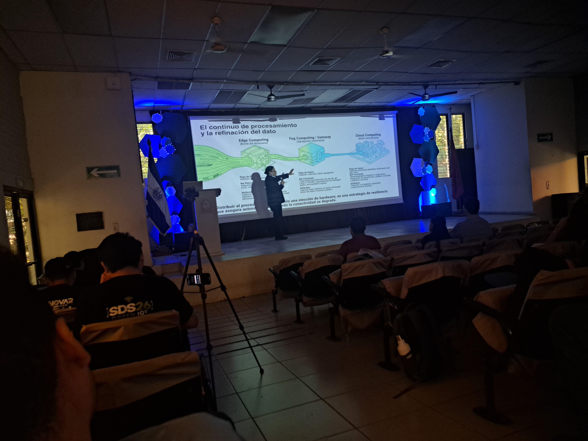

Ponencia 1: Investigación aplicada en IoT para la agricultura en El Salvador
Ponencias16/11/2026CGcq22003 y gb23003

Lugar: Auditorio 1, 10:00 a. m - 12:00 pm.
Tema: Del internet de las Cosas a la investigación aplicada.
Expositor: Otoniel Flores-Cortez
Ideas centrales: ¿Qué es realmente el IOT?, ¿Paso para llegar del prototipo a la evidencia?
Aprendizajes:
Redefiniendo el IoT: Comprendimos que el Internet de las Cosas no es solo conectar aparatos por moda o ensamblar hardware funcional, sino estructurar una arquitectura de 5 capas (Percepción, Nodo/Edge, Red, Plataforma y Aplicación) pensada para convertir fenómenos físicos en evidencia científica y datos trazables.
El problema de la brecha tecnológica agrícola: Analizamos el contexto salvadoreño, donde operar a ciegas o con un monitoreo discontinuo (como visitas semanales) genera datos incompletos y lleva a los productores a tomar decisiones basadas enteramente en la intuición empírica y la alta vulnerabilidad climática.
La ruta crítica de la investigación: Descubrimos que el hardware construido es solo el punto de partida. La verdadera investigación aplicada exige una ruta de 5 pasos: 1) Requisitos, 2) Prototipo (diseño e implementación), 3) Verificación en laboratorio, 4) Validación de aptitud en campo, y 5) Evaluación en contexto.
Elección de tecnología con criterio: Aprendimos que la selección de conectividad (Wi-Fi, Bluetooth/BLE, LoRa/LPWAN o Celular) no debe dictarse por la popularidad comercial, sino por el análisis comparativo del alcance, tasa de datos, consumo energético y la topografía real del terreno